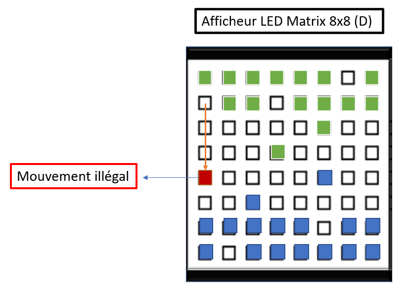
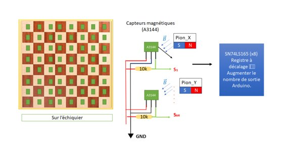
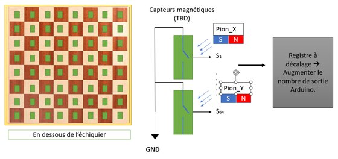
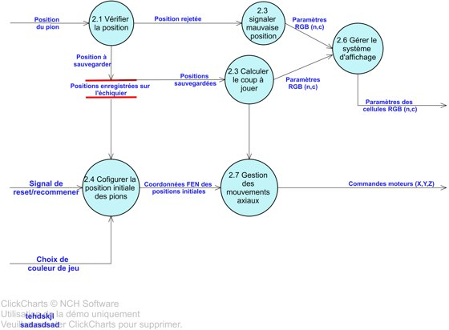
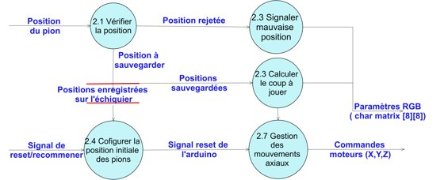
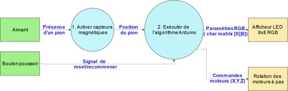
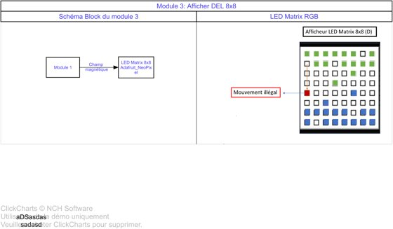
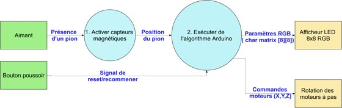
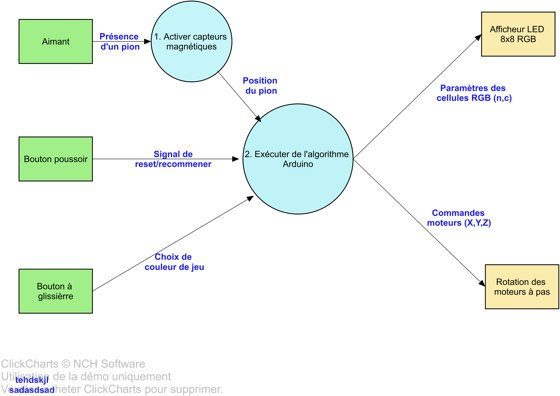

ELE3000 | Winter 2023
Automated chess board
A physical chess-board concept combining magnetic sensing, motion and embedded control.
- Status
- Design and subsystem tests
- Focus
- Embedded
- Tools and methods
- Arduino / Sensors / Mechatronics

Objective
Develop a physical board capable of supporting a solo chess experience through sensing, game logic and mechanical movement.
Engineering work
- Specify occupied-square sensing with magnetic sensors.
- Break down sensing, display and motion into functional modules.
- Explore shift-register inputs and LED-matrix output.
- Prepare board layouts and mechanical models for the proposed mechanism.
Outcome
Functional diagrams, board layouts, specifications, Arduino test sketches and mechanical files are preserved. The media document the architecture and subsystem work, not a verified end-to-end autonomous match.
Scope and limits
Piece detection and complete autonomous play are not established as finished by the archive. Planned functions are kept separate from demonstrated subsystem tests.
Engineering workflow
- 01Sense board
- 02Evaluate state
- 03Select action
- 04Drive outputs
Archive gallery 12 items




















Evidence and documentation
ELE3000 functional specifications and project diagrams; archived Arduino input-register test sketch.